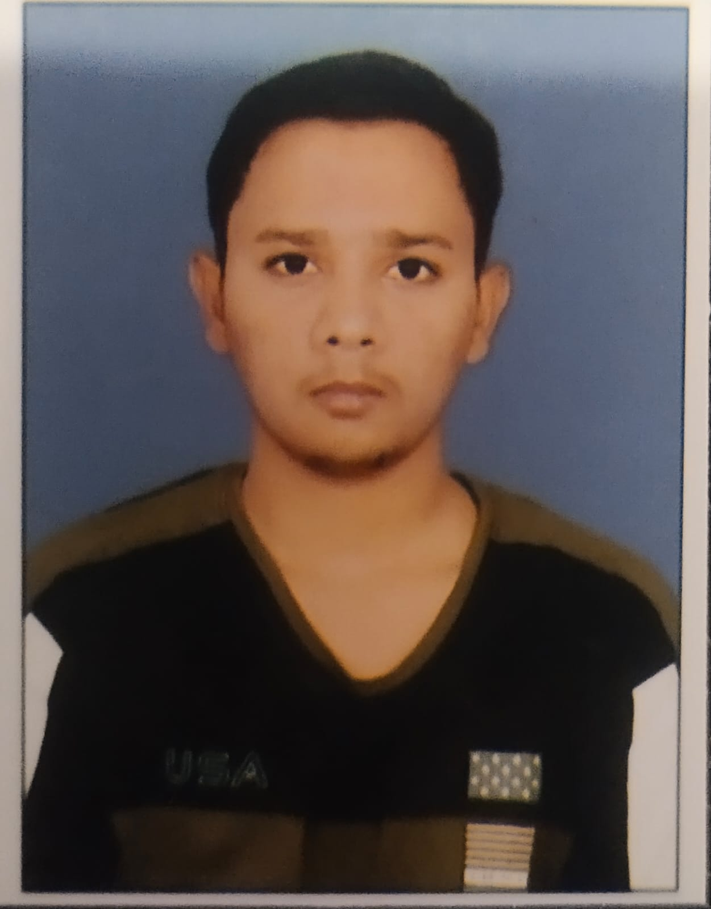

Adarsh Singh - Portfolio
Adarsh Singh - Portfolio

Personal Information
- Name: Adarsh Singh
- Current Status: B.Tech in Computer Science Engineering (1st Year)
- Institution: KIET Group of Institutions
Academic Achievements
- 10th Grade (ICSE Board): 91%
- 12th Grade (ICSE Board): 95%
Skills and Interests
- Programming: Proficient in foundational programming concepts, with an eagerness to explore languages like Python, Java, and C++.
- Technical Interests: Software Development, Web Development
- Soft Skills: Problem-solving, teamwork, and effective communication.
Extracurricular Activities
- Actively participates in coding workshops and hackathons.
- playing games in tornament
Goals
- To enhance technical expertise and gain hands-on experience in the field of computer science.
- To contribute to innovative projects and build a strong foundation for a successful career in technology.
Contact Information
- Email: adarshsingh98635@gmail.com
- LinkedIn: https://www.linkedin.com/in/adarsh-singh-6216981b3?utm_source=share&utm_campaign=share_via&utm_content=profile&utm_medium=android_app
- Phone: 9369851231